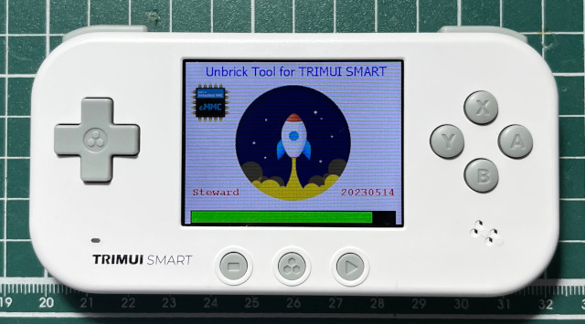
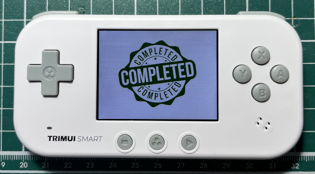

參考資料：
https://github.com/steward-fu/website/releases/tag/trimui-smart
由於，司徒不小心把TRIMUI SMART的eMMC搞壞，因此，司徒只好寫一個救磚的工具，用法如下：
$ cd $ wget https://github.com/steward-fu/website/releases/download/trimui-smart/unbrick_tool.7z $ 7za x unbrick_tool.7z $ sudo dd if=unbrick.img of=/dev/sdX bs=1M
P.S. 需要16GB以上的MicroSD
插入MicroSD後，開機就會開始救磚的工作

